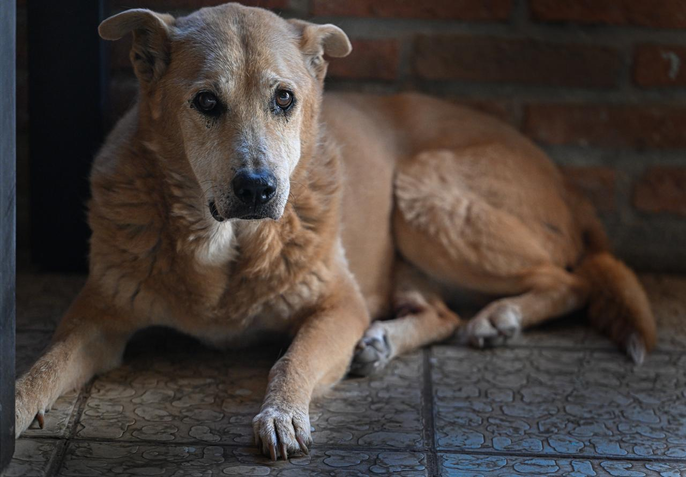
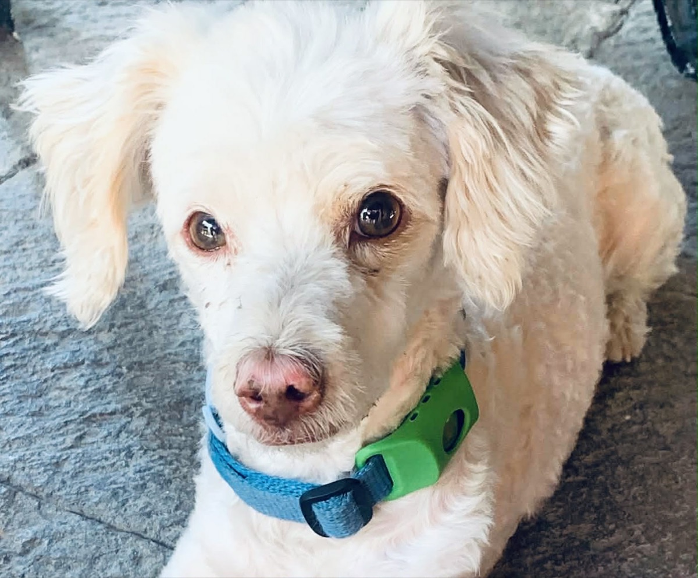

Where every dog's final chapter is filled with love
Tail End Sanctuary gives senior street dogs a soft bed, gentle care, and the dignity of being loved for the rest of their days.

To give lifelong care to senior stray dogs who have nowhere else to go — safety, comfort, compassion, and the dignity every dog deserves.
Meet Teddy
Teddy was found wandering the streets at 10 years old—tired, alone, and in pain. He has cancer.
But today, Teddy is safe. He has a warm bed, gentle medical care, and people who sit with him, comfort him, and make sure he is never alone again.
Dogs like Teddy are not defined by how they suffered—but by how they are loved in the time they have left.
Help dogs like TeddyA life that was invisible is finally seen.

Seen, at last
Many Mexican street dogs never reach their senior years. Those who do have often endured years of hardship, scavenging to survive. When age slows them down, they can no longer fend for themselves.
That's where Tail End Sanctuary steps in — a soft place to rest weary bones, nourishing meals, and the companionship every dog deserves.